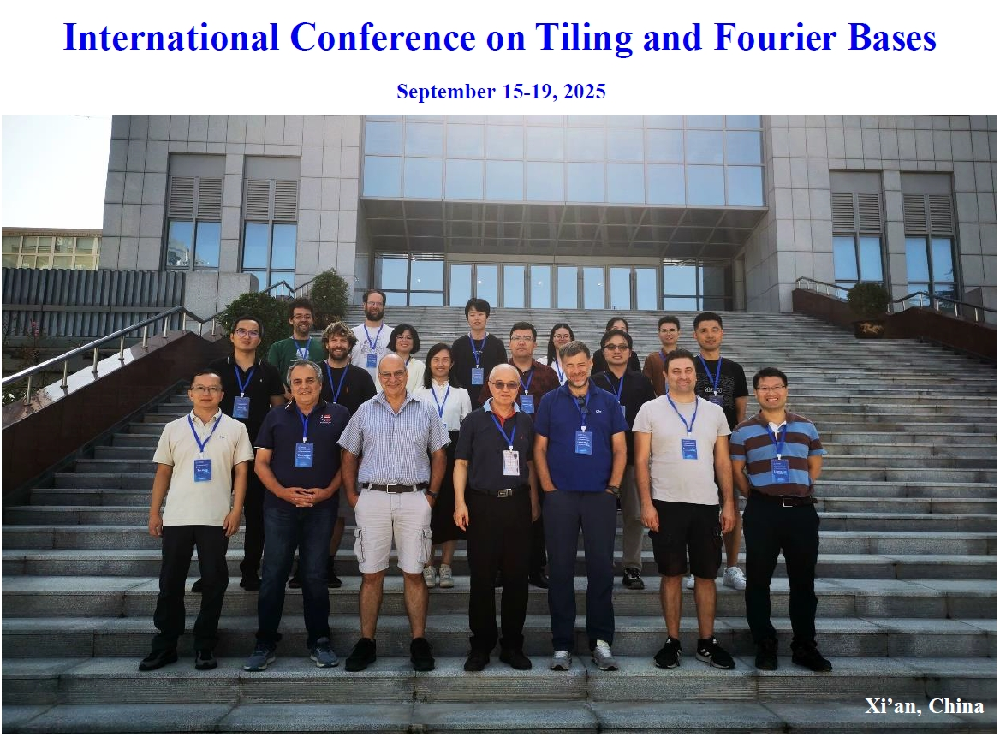
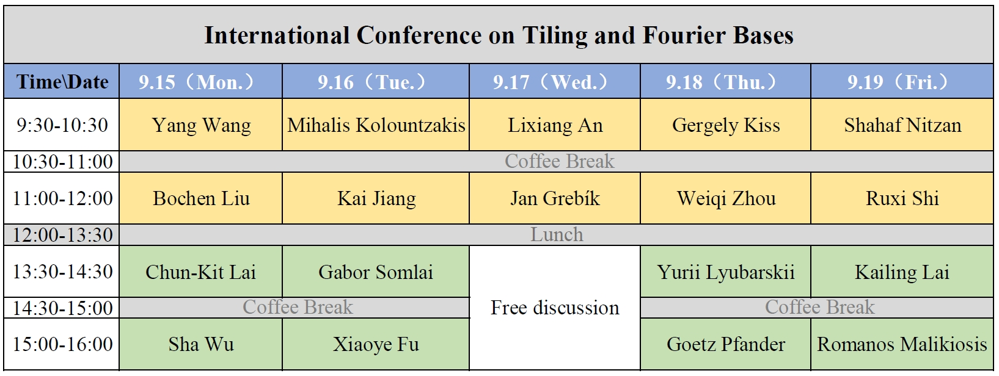

The focus of this workshop will be on the structure of tiling and spectral sets (the Fuglede problem). Related areas are also welcome.
The expected arrival and departure dates will be 14th Sep. 2025 and 20th Sep. 2025, respectively.
If you would like to attend the conference, please contact us via email.

Lixiang An (Central China Normal University)
Xiaoye Fu (Central China Normal University)
Jan Grebík (Universität Leipzig)
Kai Jiang (Xiangtan University)
Mamateli Kadir (Kashi University)
Gergely Kiss (Alfréd Rényi Institute of Mathematics)
Chun-Kit Lai (San Francisco State University)
Kailing Lai (Guangzhou University)
Lingmin Liao (Wuhan University)
Bochen Liu (Southern University of Science and Technology)
Yurii Lyubarskii ( Norwegian University of Science and Technology, and Beijing Institute of Mathematical Sciences and Applications)
Shahaf Nitzan (Georgia Institute of Technology)
Goetz Pfander (Catholic University of Eichstätt-Ingolstadt)
Ruxi Shi (Fudan University)
Aditya Siripuram (Indian Institute of Technology Hyderabad)
Gabor Somlai (Eötvös Loránd University)
Yang Wang (The University of Hong Kong)
Sha Wu (Hunan University)
Weiqi Zhou (Xuzhou University of Technology)
Shilei Fan (Central China Normal University)
Mihalis Kolountzakis (University of Crete)
Romanos Malikiosis (Aristotle University of Thessaloniki)
Tao Zhang (Xidian University)

Hotel Location: Ziction Liberal Hotel, 46 Gaoxin Rd, Yanta District, Xi'An, Shaanxi, 710071, China
Xiaoye Fu Which kind of measures are phase spectral measures?
Lixiang An Iterated integer tile and its spectral self-similar measure
Jan Grebík Translational tilings of the plane by a polygonal set
Gergely Kiss New approaches to cyclotomic divisors in integer and functional weak tilings
Mihalis Kolountzakis Common fundamental domains
Chun-Kit Lai Non-spectrality of unions of line segments and some piecewise smooth curves
Bochen Liu Fourier frames on measures with Fourier decay
Yurii Lyubarskii Gabor frames from Cauchy kernel
Romanos Diogenes Malikiosis A linear programming approach to Fuglede's conjecture in Z_p^3
Goetz Pfander Cube tilings subject to lattices and respective exponential bases
Ruxi Shi p-adic spectral measure
Gabor Somlai Connection between tiles, weak tiles and spectral sets
Sha Wu Spectrality of a measure consisting of two line segments
Weiqi Zhou Some Insights on Zeros of Fourier Transforms of Sets in Z_n^2
Please check Frequently Asked Questions on Visa-free Entry into China and 240-hour Visa-Free Transit Policy for detailed information for detailed information (from another conference).
Xi'an Xianyang International Airport (XIY) is one of the major airports in China, with direct flights connecting to many major cities in Asia, Europe, and North America. When searching for flights, one could consider transferring through Beijing, Shanghai, Guangzhou, or Hong Kong. From the airport, downtown Xi'an can be reached by airport shuttle, taxi, or metro line. The journey to the city center typically takes about 40–60 minutes.
Xi'an has several railway stations. We recommend arriving at Xi'an Railway Station (西安站) or Xi'an North Railway Station (西安北站). Xi'an North Station is a major hub for high-speed trains (G, D trains) and is connected to the metro system for easy access to downtown and the conference venue.